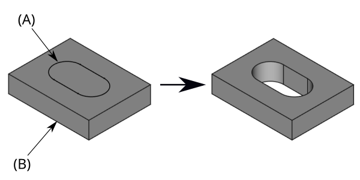
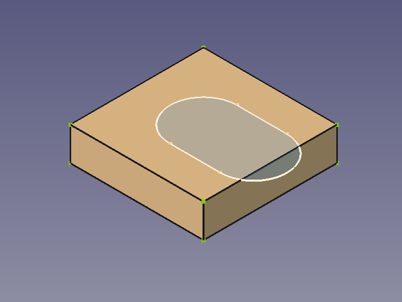
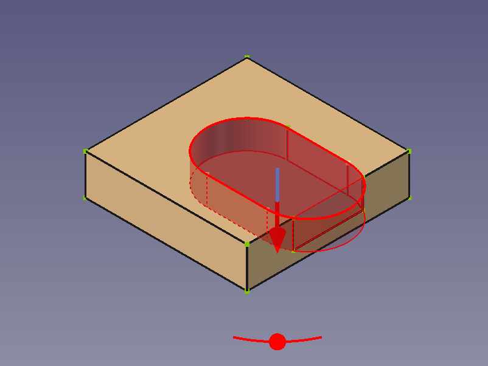
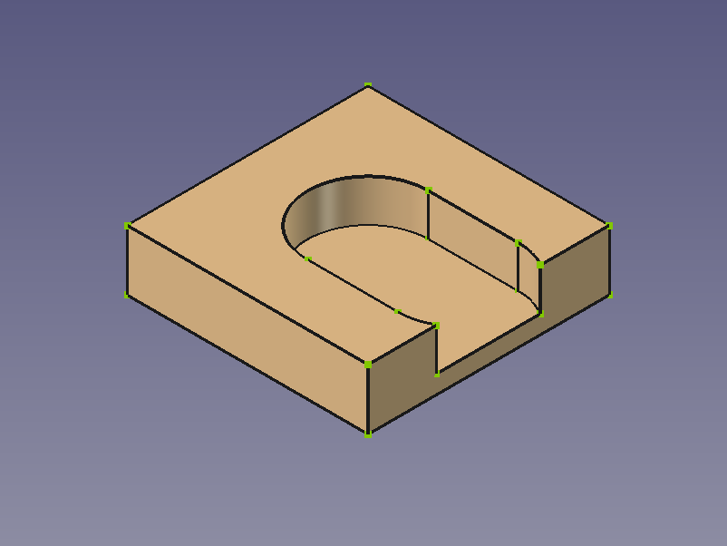
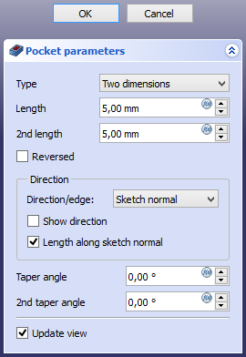

PartDesign Pocket/pl
|
|
| Lokalizacja w menu |
|---|
| Projekt Części → Cechy subtraktywne → Kieszeń |
| Środowisko pracy |
| Projekt części |
| Domyślny skrót |
| brak |
| Wprowadzono w wersji |
| - |
| Zobacz także |
| Wyciągnięcie, Otwór |
Opis
Narzędzie  Kieszeń tworzy bryłę w aktywnym obiekcie Body poprzez wyciągnięcie szkicu, obiektu 2D lub jednej bądź kilku ścian wzdłuż prostej ścieżki. Jego kształt jest łączony z istniejącą bryłą za pomocą operacji logicznej odejmowania lub (dostępne w wersji 26.3) części wspólnej.
Kieszeń tworzy bryłę w aktywnym obiekcie Body poprzez wyciągnięcie szkicu, obiektu 2D lub jednej bądź kilku ścian wzdłuż prostej ścieżki. Jego kształt jest łączony z istniejącą bryłą za pomocą operacji logicznej odejmowania lub (dostępne w wersji 26.3) części wspólnej.


Po lewej, Profil szkicu (A) został zmapowany na górną ścianę bryły bazowej (B). Po prawej, wynik po wykonaniu kieszeni.
Operacja cięcia
Przecina nakładającą się część wyciągniętego kształtu z cechy bazowej.
  


Istniejąca bryła (cecha bazowa) i szkic profilu → tryb podglądu "Odejmowania" → wynikowa bryła (cecha Kieszeni)
Operacja cechy wspólnej
Zachowuje nakładającą się część cechy bazowej i wyciągniętego kształtu.


Istniejąca bryła (cecha bazowa) i szkic profilu → tryb podglądu "Cechy wspólnej" → wynikowa bryła (cecha Kieszeni)
Użycie
- Wybierz pojedynczy szkic lub jedną albo więcej ścianek Zawartości.
- Istnieje kilka sposobów na wywołanie tego polecenia:
- Naciśnij przycisk
 Kieszeń.
Kieszeń. - Wybierz z menu opcję Projekt Części → Cechy subtraktywne → Kieszeń.
- Naciśnij przycisk
- Otworzy się Panel zadań Parametry kieszeni.
- Opcjonalnie zmień tryb Operacja (dostępne w wersji 26.3):
- Odejmowanie (domyślnie) aktywuje operację logiczną cięcia.
- Część wspólna aktywuje operację logiczną cechy wspólnej.
- Opcjonalnie dostosuj pozostałe parametry kieszeni, zobacz Opcje poniżej.
- Opcjonalnie zmień tryb Operacja (dostępne w wersji 26.3):
- Naciśnij przycisk OK, aby zamknąć Panel zadań i zakończyć działanie narzędzia.
Editing
The Pocket can be edited after its creation in two ways:
- Double-clicking it in the Tree View, or by right-clicking and selecting Edit Pocket in the context menu; this brings up the task panel and (introduced in 1.1) the interactive gizmos (if enabled).
- Via the Property View.
Opcje
Podczas tworzenia kieszeni lub po dwukrotnym kliknięciu istniejącej kieszeni w oknie Widok drzewa, wyświetlany jest panel zadań Parametry kieszeni. Zawiera on następujące ustawienia:


Początek
Ustawia, gdzie zaczyna się kieszeń. Domyślnie kieszeń zaczyna się na szkicu lub ścianie używanej jako jego profil. dostępne w wersji 26.3
- Płaszczyzna profilu (domyślnie): kieszeń zaczyna się bezpośrednio na płaszczyźnie szkicu lub ścianie profilu.
- Odsunięcie: kieszeń zaczyna się w odległości numerycznej od profilu, wprowadzonej w polu Odsunięcie początku.
- Odniesienie: kieszeń zaczyna się na ścianie, płaszczyźnie odniesienia lub szkicu wybranym z pomocą przycisku {{|Wybierz odniesienie}}.
Jest to przydatne do tworzenia wielu cech z pojedynczego szkicu głównego bez potrzeby osobnych płaszczyzn odsunięcia dla każdego szkicu.
Kierunek
introduced in 1.1 (as Mode)
Możesz wybrać jak tworzona jest kieszeń:
- Jednostronnie: kieszeń idzie w jedną stronę ściany.
- Dwustronnie: kieszeń idzie w dwie strony ściany. Dwa menu podrzędne (Strona 1 i Strona 2) pojawiają się, żeby zdefiniować kieszeń dla każdej strony.
- Symetrycznie: kieszeń jest symetryczna względem oryginalnej ściany.
Typ
For Side 1 and Side 2 if applicable.
Offers five ways to specify the length of the pocket:
- Dimension: enter a numeric value for the Length of the pocket. With the Direction option Symmetric the pocket will extend half the given length to either side of the sketch or face.
- Through all: the pocket will extend up to the last face of the support it encounters in its direction. Note that for technical reasons, this is actually a 10 meter deep pocket. If you need deeper pockets, use the type Dimension.
- To first: the pocket will extend up to the first face of the support it encounters in its direction.
- Up to face: the pocket will extend up to a face. Press the Select Face button and select a face or a datum plane from the Body.
- Up to shape: introduced in 1.0: the pocket will extend up to the selected shape. Optionally press the Select Shape button and select a shape. Leave the Select all faces checkbox enabled or disable it, press the Select button and select the faces up to which the pocket should be created.
Odsunięcie od ściany
For Side 1 and Side 2 if applicable.
Odsunięcie od powierzchni, na której ma się kończyć kieszeń. Opcja ta jest dostępna tylko gdy Typ jest ustawiony na Przez wszystkie, Do pierwszego lub Do ściany.
Długość
For Side 1 and Side 2 if applicable.
Określa długość kieszeni. Opcja ta jest dostępna tylko wtedy, gdy opcja Typ ma wartość Wymiar lub Dwa wymiary. Długość jest mierzona wzdłuż wektora kierunku lub wzdłuż normalnej do szkicu lub powierzchni. Wartości ujemne nie są możliwe. Zamiast tego użyj opcji Odwrócony.
Kąt zwężenia
For Side 1 and Side 2 if applicable.
Przechyla kieszeń w kierunku wytłaczania o podany kąt. Kąt dodatni oznacza, że zewnętrzny brzeg kieszeni się rozszerza. Należy zauważyć, że wewnętrzne struktury otrzymują przeciwny kąt przechylenia. Ma to ułatwić projektowanie form i odlewów. Ta opcja jest dostępna tylko wtedy, gdy Typ jest ustawiony na Wymiar lub Dwa wymiary.
Odwrócony
Odwraca kierunek wykonania kieszeni.
Kierunek / krawędź
Można wybrać kierunek wyciągania:
- Normalna szkicu lub Normalna ściany: Szkic lub powierzchnia jest wyciągana w kierunku swojej normalnej. Jeśli wybrano kilka szkiców lub powierzchni do wyciągnięcia, użyta zostanie normalna pierwszego z nich.
- Wybierz odniesienie ...: Szkic lub powierzchnia jest wyciągana w kierunku prostej krawędzi lub linii odniesienia wybranej z bryły.
- Kierunek niestandardowy: Szkic lub powierzchnia jest wyciągana w kierunku określonego wektora.
Długość wzdłuż wektora normalnego szkicu
Jeśli opcja jest zaznaczona, długość kieszeni jest mierzona wzdłuż kierunku wektora normalnego szkicu lub ściany, w przeciwnym razie wzdłuż kierunku niestandardowego.
Operacja
Ustawia operację logiczną używaną do połączenia kieszeni z bazową bryłą. dostępne w wersji 26.3
- Odjęcie (domyślne): kieszeń usuwa wyciągniętą objętość z bazowej bryły jak w poprzednich wersjach.
- Część wspólna: kieszeń zachowuje tylko objętość dzieloną między wyciągniętym profilem i bazową bryłą, odrzucając wszystko inne. Jest to przydatne, np. do przycięcia bryły aż do przecięcia z kształtem odniesienia.
Recompute on change
This option should be checked if Show final result or Show preview overlay is checked.
Show final result
If checked the cumulative result of the previous features and the current operation is shown.
Show preview overlay
If checked the result of the current operation is shown as an overlay.
Notes
See PartDesign Pad.
- Używaj typu Wymiar lub Przez wszystkie, gdy tylko jest to możliwe, ponieważ inne typy czasami sprawiają problemy, gdy są modelowane.
- Poza tym, cecha kieszeni ma takie same ograniczenia jak cecha Wyciągnięcie.
Właściwości
See also: Property View.
A PartDesign Pocket object is derived from a Part Feature object and inherits all its properties. It also has the following additional properties:
Dane
Compatibility
- DANE (Hidden)Use Legacy Taper Direction (
Bool): introduced in 26.3
Projekt Części
- DANEUdoskonal:
PrawdalubFałsz. Czyści resztkowe krawędzie pozostawione po operacji. Ta właściwość jest początkowo ustawiana zgodnie z ustawieniami użytkownika (znajduje się w Preferencje → Projekt Części → Ogólne → Ustawienia modelu). - DANEOperacja (
Enumeration): ustawia operację logiczną używaną do połączenia cechy z bazową bryłą (Odjęcie, Część wspólna), zobacz Opcje. dostępne w wersji 26.3
Kieszeń
- DANETyp (
Enumeration): Określa w jaki sposób kieszeń będzie wytłaczana, patrz sekcja Opcje. - DANEDługość (
Length): Określa długość kieszeni, patrz Opcje. - DANEDługość2 (
Length): Druga długość kieszeni w przypadku, gdy DANETyp ma wartość Dwa wymiary, patrz Opcje. - DANEKierunek niestandardowy (
Bool): dostępne w wersji 0.20. Jeśli opcja jest zaznaczona, kierunek kieszeni nie będzie wektorem normalnym szkicu, ale wektorem wskazanym, patrz sekcja Opcje. - DANEKierunek (
Vector): dostępne w wersji 0.20. Wektor kierunku kieszeni, jeśli użyto DANEKierunek niestandardowy. - DANEOś odniesienia (
LinkSub) - DANEWzdłuż normalnej szkicu (
Bool): dostępne w wersji 0.20. Jeśli wartość ta zostanie ustawiona naPrawda, długość kieszeni będzie mierzona wzdłuż normalnej szkicu. W przeciwnym razie i jeśli użyto DANEKierunek niestandardowy, jest ona mierzona wzdłuż niestandardowego kierunku. - DANEDo ściany (
LinkSub): Ściana, do której kieszeń będzie wytłaczana, patrz Opcje. - DANEOdsunięcie (
Length) - DANEKąt nachylenia (
Angle) - DANEKąt nachylenia2 (
Angle)
Side1
- DANEType (
Enumeration):Length,ThroughAll,UpToFirst,UpToFaceorUpToShape. Do not use?TwoLengths. Defines how the pocket will end. - DANELength (
Length): The length of the pocket. - DANEUp To Face (
LinkSub): Face where the pocket will end. - DANEUp To Shape (
LinkSubList): Faces or shape(s) where the pocket will end. - DANEOffset (
Length): Offset from the face where the pocket will end. This is only taken into account if the DANEType optionUpToFirstorUpToFaceis used. - DANETaper Angle (
Angle) Taper angle of the extrusion.
Side2
The properties in this group are only editable if DANESide Type is Two sides. See the Side1 group for more information about the properties.
- DANEType2 (
Enumeration): introduced in 1.1 - DANELength2 (
Length) - DANEUp To Face2 (
LinkSub): introduced in 1.1 - DANEUp To Shape2 (
LinkSubList): introduced in 1.1 - DANEOffset2 (
Length): introduced in 1.1 - DANETaper Angle2 (
Angle)
Szkic bazowy
See PartDesign Pad.
Początek
See PartDesign Pad.
- Narzędzia struktury: Część, Grupa
- Narzędzia wspomagające: Utwórz zawartość, Nowy szkic, Edycja szkicu, Mapuj szkic na ścianę, Sprawdź poprawność szkicu , Sprawdź geometrię, Łącznik kształtów podrzędnych, Utwórz klona, Płaszczyzna odniesienia, Linia odniesienia, Punkt odniesienia, Lokalny układ współrzędnych
- Narzędzia do modelowania
- Narzędzia addytywne: Wyciągnięcie, Wyciągnij przez obrót, Wyciągnięcie przez profile, Wyciągnięcie po ścieżce, Addytywna helisa, Addytywny sześcian, Addytywny walec,Addytywna sfera, Addytywny stożek, Addytywna elipsoida, Addytywny torus, Addytywny graniastosłup, Addytywny klin
- Narzędzia subtraktywne: Kieszeń, Otwór, Rowek, Subtraktywne wyciągnięcie przez profile, Subtraktywne wyciągnięcie po ścieżce, Subtraktywna helisa, Subtraktywny sześcian, Subtraktywny walec, Subtraktywna sfera, Subtraktywny stożek, Subtraktywna elipsoida, Subtraktywny torus,Subtraktywny graniastosłup, Subtraktywny klin
- Narzędzia operacji logicznych Funkcje logiczne
- Narzędzia ulepszające: Zaokrąglenie, Fazka, Pochylenie ścian, Grubość
- Narzędzia do transformacji: Odbicie lustrzane, Szyk liniowy, Szyk kołowy, Transformacja wielokrotna, Skaluj
- Dodatki: Przenieś, Koło łańcuchowe, Koło zębate ewolwentowe, Kreator projektowania wału
- Narzędzia menu kontekstowego: Ustaw czubek, Przenieś cechę, Przenieś cechę w drzewie, Wygląd zewnętrzny, Ustaw kolor
- Preferencje: Ustawienia, Dostrajanie parametrów
- Jak zacząć
- Instalacja: Pobieranie programu, Windows, Linux, Mac, Dodatkowych komponentów, Docker, AppImage, Ubuntu Snap
- Podstawy: Informacje na temat FreeCAD, Interfejs użytkownika, Profil nawigacji myszką, Metody wyboru, Nazwa obiektu, Edytor ustawień, Środowiska pracy, Struktura dokumentu, Właściwości, Pomóż w rozwoju FreeCAD, Dotacje
- Pomoc: Poradniki, Wideo poradniki
- Środowiska pracy: Strona Startowa, Złożenie, BIM, CAM, Rysunek Roboczy, MES, Inspekcja, Siatka, OpenSCAD, Część, Projekt Części, Punkty, Inżynieria Wsteczna, Robot, Szkicownik, Arkusz Kalkulacyjny, Powierzchnia 3D, Rysunek Techniczny, Test Framework